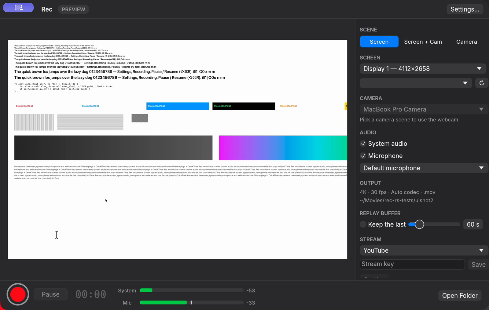

A fast, reliable screen and camera recorder for Mac. Built for making videos, not for fiddling with settings.
Requires macOS 15 or later on Apple Silicon. Free and open source.

One recording with your screen, system audio, microphone and webcam, ready for your editor.
Captured at native resolution (a 5K display stays 5K) and scaled with a Lanczos filter on the GPU.
Nine ready-made layouts, from Presenter to Vertical for Shorts. Build your own and switch live with animated transitions.
Keep the last seconds rolling and save them the moment something great happens.
Stream over RTMP, SRT or WHIP to several destinations at once from a single hardware encode.
Built-in noise suppression, low cut, noise gate and compressor for your microphone.
Records .mov or .mp4 that plays in QuickTime and imports into Final Cut, Premiere and DaVinci Resolve.
Only Apple frameworks and Rust. No FFmpeg, OBS or Electron at runtime.
Download the latest release, right-click, Open, and hit record.
Download for Mac